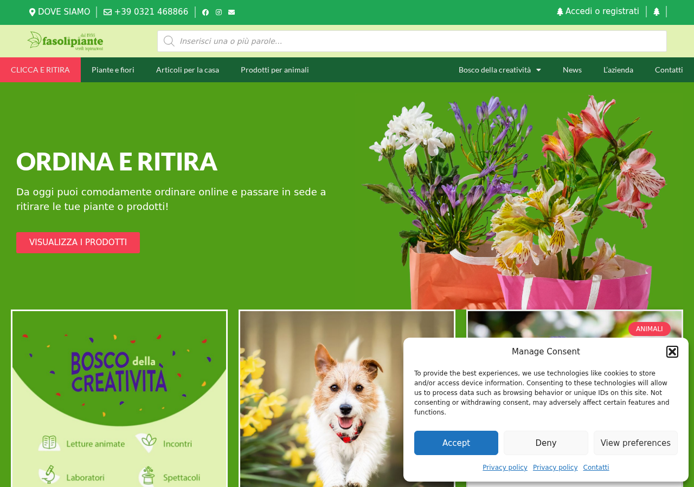
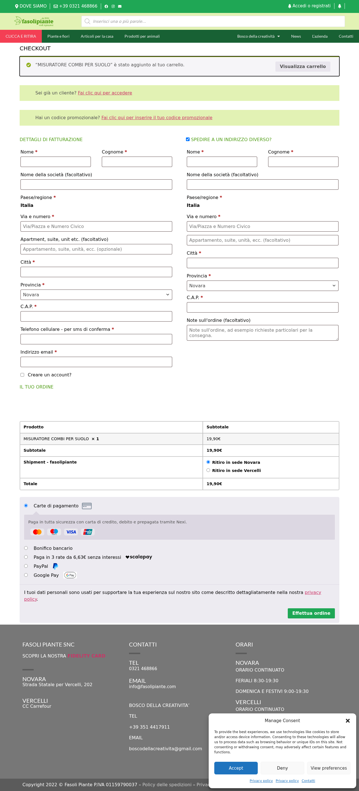
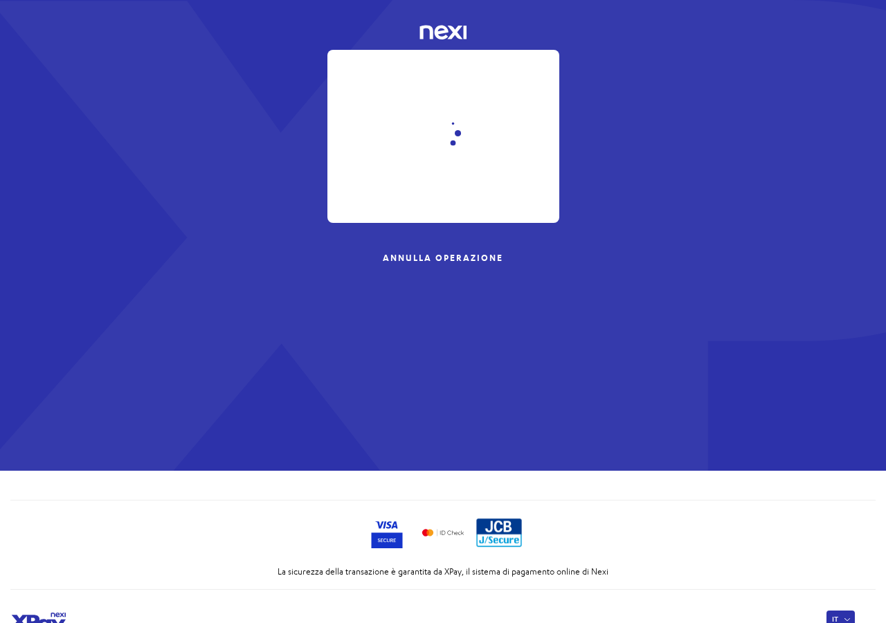

24 marzo 2026
fasolipiante.com
Verifica post-fix
1 iterazione
80/100
Il sito funziona, ma i pagamenti con carta vanno verificati con il cliente
Il percorso di acquisto e il collegamento con il sistema di pagamento Nexi funzionano correttamente dal punto di vista tecnico. Tuttavia, analizzando gli ordini degli ultimi giorni, nessun pagamento con carta risulta completato con successo: tutti sono stati annullati per timeout. I pagamenti via PayPal invece funzionano regolarmente. Serve un riscontro da Nexi o un test con carta reale.
Cronologia intervento
15:50Avvio controllo: homepage, carrello, negozio
15:51Verifica configurazione server e componenti pagamento
15:52Test completo: aggiunta prodotto, compilazione dati, invio ordine
15:52Apertura corretta della pagina di pagamento Nexi
15:53Analisi ordini recenti: tutti i pagamenti con carta annullati
15:54Ordine di test rimosso, report generato
Durata totale: ~5 minuti
Il sito si apre correttamente
La pagina principale del negozio online si carica senza problemi. La navigazione, la ricerca prodotti e le pagine del catalogo funzionano tutte regolarmente.

Pagina principale del negozio — tutto regolare
Il carrello e la pagina di pagamento funzionano
Abbiamo aggiunto un prodotto al carrello e compilato tutti i dati necessari per l'acquisto. La pagina mostra correttamente tutti i metodi di pagamento disponibili: carta di credito (Nexi), bonifico bancario, Scalapay (pagamento a rate), PayPal e Google Pay.

La pagina di pagamento con tutti i metodi disponibili
Il collegamento con Nexi funziona
Cliccando “Effettua ordine” con il pagamento carta selezionato, il sito redirige correttamente alla pagina sicura di Nexi dove il cliente può inserire i dati della propria carta. Il collegamento tecnico tra il sito e Nexi è funzionante.

La pagina di pagamento Nexi si apre correttamente
Attenzione: nessun pagamento con carta completato negli ultimi giorni
Analizzando gli ordini dal 11 al 24 marzo, tutti quelli con pagamento carta risultano “annullati” — il che significa che i clienti arrivano alla pagina Nexi ma non completano il pagamento. In genere l'ordine viene cancellato automaticamente dopo 60 minuti di attesa.
Al contrario, i pagamenti tramite PayPal risultano tutti completati regolarmente.
Dal punto di vista tecnico il sito funziona: il problema potrebbe essere lato Nexi (credenziali scadute, conto non attivo) oppure i clienti stanno abbandonando volontariamente. Consigliamo di fare un test con una carta reale oppure contattare Nexi per verificare lo stato del terminale.
Situazione ordini recenti
Ecco un riepilogo degli ultimi ordini. Quelli con carta di credito (Nexi) risultano tutti annullati. Quelli con PayPal sono andati a buon fine.
Data
Metodo
Stato
24/03 ore 10:46
Carta (Nexi)
Annullato
24/03 ore 10:45
Carta (Nexi)
Annullato
24/03 ore 10:44
Carta (Nexi)
Annullato
24/03 ore 07:09
Carta (Nexi)
Annullato
22/03 ore 13:35
Carta (Nexi)
Annullato
20/03 ore 10:22
Carta (Nexi)
Non riuscito
19/03 ore 21:27
PayPal
Completato
19/03 ore 20:13
PayPal
Completato
17/03 ore 22:53
PayPal
In lavorazione
13/03 ore 16:46
Carta (Nexi)
Annullato
13/03 ore 12:20
Carta (Nexi)
Annullato
11/03 ore 17:10
Carta (Nexi)
Annullato
Riepilogo
Parametro
Valore
URL
https://fasolipiante.com
Server
Cloudways Octopus (596646)
Stack
WordPress + WooCommerce 10.6.1
Plugin Nexi
cartasi-x-pay v8.3.1
Gateway mode
XPay (non NPG) — produzione
Alias
payment_3567758
3DS 2.0
Abilitato
Scenario
Post-fix verification
Iterazioni
1
Verdict
ISSUES — infrastruttura OK, transazioni KO
Analisi flusso pagamento
1. Checkout form → POST /checkout/ → ordine creato (wc-pending)
2. Redirect a /checkout/order-pay/{id}/?key=... (receipt page)
3. exec_payment() genera form POST verso ecommerce.nexi.it
4. Browser rediretto a https://ecommerce.nexi.it/ecomm/payment/CassaQP_c2p.jsp
5. Pagina Nexi carica correttamente (status 200)
6. Form carta visibile, certificati Visa Secure / Mastercard ID Check
Il flusso tecnico funziona end-to-end fino alla pagina Nexi.
Il problema e' che nessuna transazione viene completata.
Order notes (ordini di oggi)
# Ordine 67920 (24/03 10:46 - Nexi)
10:46 Scorta in sospeso 60 min applicata a: ABBEVERATOIO BOTTIGLIA
12:35 Ordine non pagato annullato - tempo limite raggiunto
# Ordine 67919 (24/03 10:45 - Nexi)
10:45 Scorta in sospeso 60 min applicata a: ABBEVERATOIO BOTTIGLIA
12:35 Ordine non pagato annullato - tempo limite raggiunto
# Ordine 67918 (24/03 10:44 - Nexi)
10:44 Scorta in sospeso 60 min applicata a: ABBEVERATOIO BOTTIGLIA
12:35 Ordine non pagato annullato - tempo limite raggiunto
Nessuna nota di errore Nexi (esito KO, MAC mismatch, etc).
L'utente sembra arrivare alla pagina Nexi ma non completare.
Endpoint e configurazione
REST API: https://fasolipiante.com/wp-json/ → 200 OK
S2S Callback: /wp-json/woocommerce-gateway-nexi-xpay/s2s/xpay/{id} → POST 500 (expected senza dati validi)
Redirect URL: /?woocommerce-gateway-nexi-xpay-redirect → 200 OK
Cancel URL: /?woocommerce-gateway-nexi-xpay-cancel → 200 OK
Nexi endpoint: https://ecommerce.nexi.it/ecomm/ecomm/DispatcherServlet → 200 OK
WP_DEBUG: false (nessun debug.log)
Plugin attivi pagamento: cartasi-x-pay 8.3.1, scalapay 1.1.39, paypal-payments 3.4.1
Ipotesi e prossimi passi
IPOTESI:
1. Credenziali Nexi (alias/MAC) valide ma terminale disabilitato lato Nexi
2. Problema 3DS: autenticazione forte fallisce sistematicamente
3. Clienti abbandonano volontariamente (meno probabile: sono 4 tentativi
in 2 minuti dallo stesso prodotto il 24/03 - sembra un utente che riprova)
PROSSIMI PASSI:
- Fare un test con carta reale per distinguere caso 1/2 da caso 3
- Controllare il pannello Nexi per vedere se le transazioni arrivano
- Se arrivano con esito KO, verificare il codice errore
- Se NON arrivano, rigenerare MAC dal pannello merchant Nexi
- Abilitare WP_DEBUG temporaneamente per catturare eventuali errori PHP